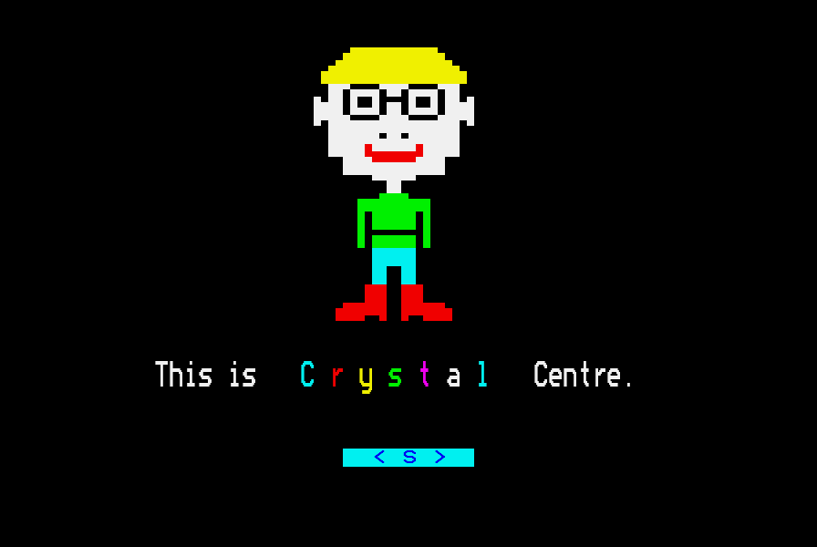
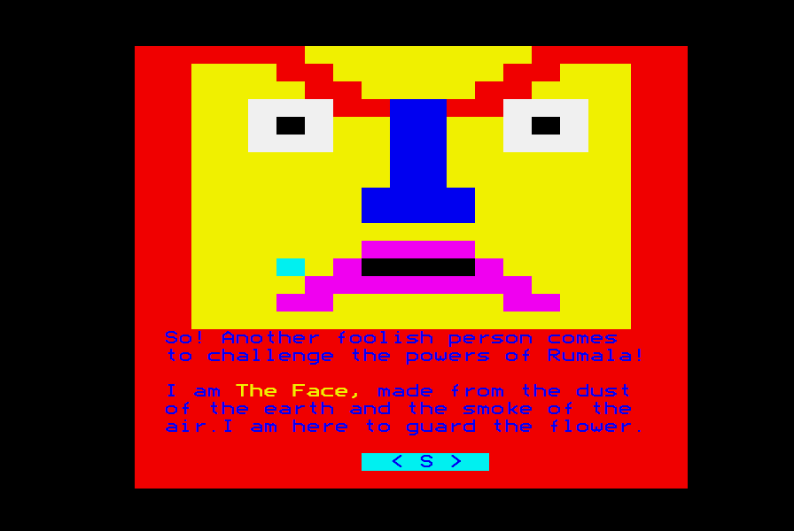
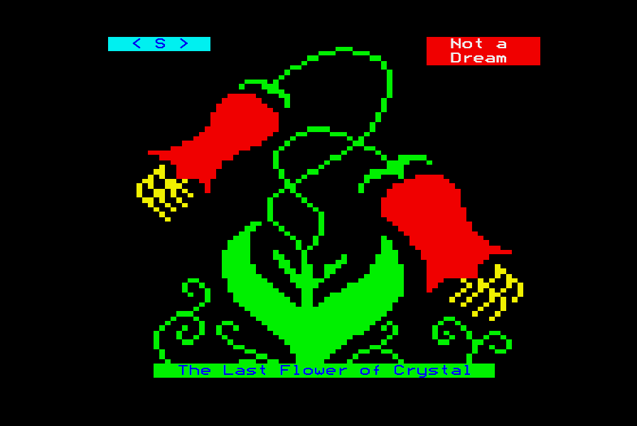
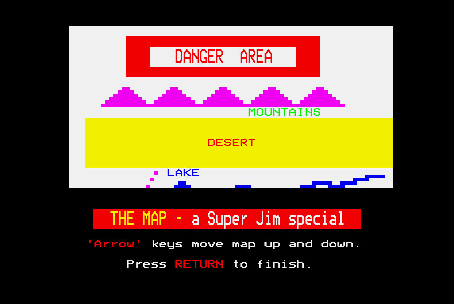

<meta charset="utf-8">
<meta name="viewport" content="width=device-width, initial-scale=1">
<title>Flowers of Crystal</title>
<link rel="preconnect" href="https://fonts.googleapis.com">
<link rel="stylesheet" href="https://fonts.googleapis.com/css2?family=Lato:wght@400;700;900&family=IBM+Plex+Mono:wght@400;500&display=swap">
<style>
:root{
  --bg:#23262d; --paper:#e9e7e1; --surface:#ffffff; --surface-2:#f1efea; --line:#d5d3cc; --line-soft:#e0ded8;
  --ink:#2f3136; --ink-soft:#55585f; --ink-mute:#80838a;
  --link:#1f5fa8; --link-hover:#154480; --accent:#1f5fa8;
  --amber:#c25a00; --cyan:#1f5fa8; --coral:#d04a3a; --green:#2a8a4a; --violet:#4a5bd6; --hl:#fff0c2;
  --chip:#2f3136; --chip-ink:#ffffff;
  --c64blue:#40318d; --c64grey:#686868;
  --fd:'Lato',system-ui,sans-serif; --fb:'Lato',system-ui,sans-serif; --fm:'IBM Plex Mono',ui-monospace,Menlo,monospace;
  --col:1080px; --gx:68px; --fs:17px; --lh:1.6; --hw:900; --h1:46px; --h2:26px; --sy:48px; --pp:26px; --r:10px;
  --plate-shadow:0 1px 2px rgba(0,0,0,.05),0 4px 14px rgba(0,0,0,.05);
}
*{box-sizing:border-box}
html{background:var(--bg);min-height:100%}
body{background:var(--paper);color:var(--ink);font-family:var(--fb);font-size:var(--fs);line-height:var(--lh);max-width:var(--col);margin:0 auto;min-height:100vh;padding:0 0 4rem}
h1,h2,h3{font-weight:var(--hw);letter-spacing:-.01em;text-wrap:balance;color:var(--ink);margin:0}
.wrap{padding:0 var(--gx)}
.hero{padding:48px var(--gx) 8px;text-align:left}
.eyebrow{font-family:var(--fm);font-size:12px;letter-spacing:.08em;text-transform:uppercase;color:var(--ink-mute);margin:0 0 10px}
.hero h1{font-size:var(--h1);line-height:1.15;letter-spacing:-.02em;margin:0 0 14px}
.hero .sub{margin:0 0 .6em;color:var(--ink-soft)}
section{padding:var(--sy) 0 24px}
section:last-of-type{border-bottom:none}
.fig{font-family:var(--fm);font-size:12px;letter-spacing:.08em;text-transform:uppercase;color:var(--ink-mute);margin:0 0 10px}
h2.t{font-size:var(--h2);margin-bottom:12px}
.lede{color:var(--ink-soft);margin:0 0 30px}
.plate{background:var(--surface);border:1px solid var(--line);border-radius:var(--r);padding:var(--pp);box-shadow:var(--plate-shadow)}
.cap{font-size:14px;color:var(--ink-mute);margin-top:14px;line-height:1.55}
.cap b{color:var(--ink);font-weight:700}
code{font-family:var(--fm);font-size:.82em;background:var(--chip);color:var(--chip-ink);border-radius:4px;padding:2px 6px;white-space:nowrap}

a{color:var(--link)}a:hover{color:var(--link-hover)}
.fc-pair{display:grid;grid-template-columns:1fr 1fr;gap:18px;align-items:start}
.fc-pair img,.fc-shot{width:100%;display:block;border-radius:4px;image-rendering:pixelated;background:#000}
.fc-tv{width:100%;display:block;background:#000;border-radius:4px;image-rendering:pixelated}
.fc-focus{outline:2px solid transparent;border-radius:4px}
.fc-focus:focus{outline-color:#2e7d32}
.fc-bar{display:flex;flex-wrap:wrap;gap:8px;align-items:center;margin:12px 0 0}
.fc-bar button{font:inherit;font-size:14px;padding:5px 12px;border:1px solid var(--line);background:var(--surface-2);color:var(--ink);border-radius:6px;cursor:pointer}
.fc-bar button:hover{border-color:var(--ink-mute)}
.fc-bar button.on{background:var(--ink);color:#fff;border-color:var(--ink)}
.fc-bar button:disabled{opacity:.45;cursor:default}
.fc-bar label{font-size:14px;color:var(--ink-soft);display:flex;gap:6px;align-items:center;flex-wrap:wrap;max-width:100%}
.fc-bar select{font:inherit;font-size:14px;padding:4px 6px;border-radius:6px;border:1px solid var(--line);background:var(--surface);max-width:100%;min-width:0}
.fc-out{font-family:var(--fm);font-size:13px;color:var(--ink-soft);margin-top:10px;min-height:1.6em;white-space:pre-wrap}
.fc-out b{color:var(--ink)}
.fc-miss{font-size:14px;color:var(--amber)}
.fc-tt{font-family:var(--fm);font-size:14px;background:#000;color:#fff;border-radius:4px;padding:10px 14px;margin-top:10px;min-height:5.5em;line-height:1.7;white-space:pre-wrap}
.fc-tt .c1{color:#ff5050}.fc-tt .c2{color:#40ff40}.fc-tt .c3{color:#ffff40}.fc-tt .c4{color:#7090ff}.fc-tt .c5{color:#ff60ff}.fc-tt .c6{color:#40ffff}.fc-tt .c7{color:#fff}
.fc-tt .dim{color:#888}
.fc-table{border-collapse:collapse;font-size:14px;margin:14px 0;width:100%}
.fc-table th,.fc-table td{border-bottom:1px solid var(--line-soft);padding:5px 8px;text-align:left;vertical-align:top}
.fc-table th{font-weight:700;color:var(--ink-soft);font-size:13px}
.fc-table tr.now td{background:var(--hl)}
.fc-grid{border-collapse:collapse;font-size:12px;width:100%;table-layout:fixed}
.fc-grid th,.fc-grid td{border:1px solid var(--line-soft);padding:4px 2px;text-align:center}
.fc-grid th{font-weight:700;color:var(--ink-soft);font-size:11px;overflow:hidden;text-overflow:ellipsis}
.fc-grid td{cursor:pointer}
.fc-grid td.path{background:#dff0e3}.fc-grid td.river{background:#d9e8fb}.fc-grid td.hills,.fc-grid td.factory{background:#fdeccc}.fc-grid td.none{color:var(--ink-mute)}
.fc-grid td.self{background:var(--surface-2);cursor:default}
.fc-grid td.now{outline:3px solid var(--ink);outline-offset:-3px}
.fc-key{display:flex;flex-wrap:wrap;gap:6px 14px;font-size:13px;color:var(--ink-soft);margin-top:8px}
.fc-key i{display:inline-block;width:12px;height:12px;border-radius:2px;margin-right:5px;vertical-align:-1px;border:1px solid var(--line)}
.fc-plot{width:100%;max-width:390px;display:block;margin:0 auto}
.fc-plot text{font-family:var(--fm);font-size:11px;fill:var(--ink-soft)}
.fc-plot .pl{cursor:pointer}
.fc-plot .pl circle{fill:var(--surface);stroke:var(--ink);stroke-width:1.5}
.fc-plot .pl.from circle{fill:#2e7d32;stroke:#2e7d32}.fc-plot .pl.to circle{fill:#c25a00;stroke:#c25a00}
.fc-bars{display:grid;grid-template-columns:11em 1fr 3.4em 3.4em;gap:4px 10px;align-items:center;font-size:13px;margin-top:12px}
.fc-bars .track{height:12px;background:var(--surface-2);border-radius:6px;overflow:hidden;border:1px solid var(--line-soft)}
.fc-bars .fill{height:100%;background:var(--violet)}
.fc-bars .n{font-family:var(--fm);text-align:right;color:var(--ink-soft)}
.fc-bars .hd{font-weight:700;color:var(--ink-soft);font-size:12px}
.fc-spells{display:grid;grid-template-columns:6.5em repeat(5,1fr);gap:4px;margin-top:4px}
.fc-spells span{font-size:13px;color:var(--ink-soft);align-self:center}
.fc-spells button{font:inherit;font-family:var(--fm);font-size:13px;padding:6px 0;border:1px solid var(--line);border-radius:5px;background:var(--surface-2);color:var(--ink-mute);cursor:pointer}
.fc-spells button.s1{background:#7a1f6e;color:#fff;border-color:#7a1f6e}
.fc-spells button.s2{background:#e8d3e5;color:#7a1f6e;border-color:#c9a3c4;text-decoration:line-through}
.fc-bits{font-family:var(--fm);font-size:13px;margin-top:12px;display:grid;grid-template-columns:auto 1fr;gap:4px 12px;align-items:baseline}
.fc-bits dt{color:var(--ink-mute)}.fc-bits dd{margin:0;color:var(--ink);overflow-wrap:anywhere}
.fc-bits .b1{color:#7a1f6e;font-weight:500}
.fc-steps{list-style:none;padding:0;margin:0;counter-reset:st}
.fc-steps li{counter-increment:st;padding:6px 10px 6px 34px;position:relative;border-radius:6px;color:var(--ink-mute);font-size:15px}
.fc-steps li::before{content:counter(st);position:absolute;left:10px;top:6px;font-family:var(--fm);font-size:12px}
.fc-steps li.done{color:var(--ink-soft)}
.fc-steps li.now{background:var(--hl);color:var(--ink)}
.fc-mem{display:flex;height:26px;border-radius:5px;overflow:hidden;border:1px solid var(--line);margin:14px 0 4px;font-family:var(--fm);font-size:11px}
.fc-mem div{display:flex;align-items:center;justify-content:center;white-space:nowrap;overflow:hidden;color:#fff}
.fc-mem .free{background:var(--surface-2);color:var(--ink-mute)}
.fc-mem .dfs{background:#8a8f99}.fc-mem .prog{background:var(--green)}.fc-mem .scr{background:#23262d}
.fc-memkey{position:relative;height:16px;font-family:var(--fm);font-size:11px;color:var(--ink-mute)}
.fc-memkey span{position:absolute;top:0;white-space:nowrap}
.fc-memkey span:last-child{transform:translateX(-100%)}
.fc-mem .old{background:repeating-linear-gradient(45deg,#cfe6d3 0 4px,#e9f3eb 4px 8px)}
.fc-chips{display:flex;flex-wrap:wrap;gap:4px;margin-top:10px}
.fc-chips span{font-family:var(--fm);font-size:13px;padding:2px 8px;border-radius:4px;background:var(--surface-2);color:var(--ink-soft)}
.fc-chips span.now{background:#2e7d32;color:#fff}
.fc-chips span.done{background:#cfe6d3;color:var(--ink)}
.fc-quiz{font-family:var(--fm);font-size:14px;margin-top:10px}
.fc-det{display:inline-block;margin-left:10px;padding:1px 8px;border-radius:3px;background:#40ffff;color:#000;font-family:var(--fm);font-size:13px}
.fc-det b{color:#c00}
@media (max-width:760px){:root{--gx:18px;--pp:14px}.fc-pair{grid-template-columns:1fr}.fc-bars{grid-template-columns:8em 1fr 3em 3em}.fc-spells{grid-template-columns:4.8em repeat(5,1fr)}}
</style>
<!-- tabs -->
<header class="hero">
  <p class="eyebrow">1984 · 4Mation Educational Resources</p>
  <h1>Flowers of Crystal</h1>
  <p class="sub">Flowers of Crystal was still on sale on 24 October 2026, 42 years after it was written. 4Mation sold the BBC Micro original, set up to run on Windows, as Retro Flowers of Crystal: a CD-ROM for £15.50, with the story book and the teacher's guide as PDFs.</p>
  <a class="buy" href="https://www.4mation.co.uk/retro/retrofoc.html">Buy Retro Flowers of Crystal <span>from 4Mation</span></a>
  <p class="sub">A school adventure written in BBC BASIC. The program restarts itself after every journey, and it remembers the player's progress in the only 26 variables a restart does not wipe. Its final picture, the Crystal Flower, is drawn by six small machine-code programs, one for each part of a dream the player collects.</p>
</header>
<main class="wrap">

<section data-part="">
  <p class="fig">01 · The game</p>
  <h2 class="t">The game</h2>
  <p class="lede">4Mation describes Flowers of Crystal as an adventure about ecology and conservation. The player helps young Jim save the planet Crystal from greedy Mr Grubble.</p>
  <div class="fc-pair">
    <div class="plate"><p class="cap">Super Jim at the Centre, where part 1 starts and where he brings the player back after every rescue.</p></div>
    <div class="plate"><p class="cap">The Face, who keeps the way into the Danger Area in part 2.</p></div>
  </div>
  <p>The story book that came with the game tells how, long ago, Rumala hid four things: a bag of soil, a sack of fertiliser, a bottle of magic spell water and an enchanted gold pot. Rumala also hid the Crystal Flower, in the place that later became the Danger Area. Now Mr Grubble runs a bubble-gum factory and a gum forest on Crystal, and his guards, Grubble's Grabbers, patrol it.</p>
  <p>Part 1 is about travelling between eight places on Crystal. At the Centre the player hears a weather report and picks equipment: one of a warm coat, a raincoat and a drink; one of four testers; and two of a fright stick, a radio, bubble-gum and a disguise kit. Every journey needs a travel permit from Jim, and on the way the player meets a hazard, something that can go wrong. Seven treasures are hidden in the other places. Bringing all seven back to the Centre ends part 1 with a hint: <q>When you are asked your age you must say 197.</q></p>
  <p>Part 2 is the Danger Area. The Face asks the player's age, and only 197 gets them in. Inside, the player uses spells against the dangers. There are four kinds of spell: moving, vanishing, flower and lucky dip. Flower spells give the six parts of a dream of the Crystal Flower, and the game ends when the player finds the castle's part while holding the other five.</p>
  <p>The disc's menu offers the story, the two parts of the adventure, and a program that prints three worksheets for the classroom: Crystal Log, Crystal Notes and Grubble's Gum Forest Grid. Everything on the disc is written in BBC BASIC, eight programs in all, plus fifteen pictures drawn by machine code. Mike Matson wrote it a year after <a href="../grannys-garden/index.html">Granny's Garden</a>.</p>
  <p>On this page, a name starting with PROC is one of the program's procedures and a name starting with FN is one of its functions. A number like &amp;0E00 or <code>$0E00</code> is an address in the computer's memory, written in hexadecimal.</p>
</section>

<section data-part="adventure-2">
  <p class="fig">02 · The Crystal Flower</p>
  <h2 class="t">Six small machine-code programs draw the Crystal Flower</h2>
  <p class="lede">Each part of the flower dream the player finds in the Danger Area adds a piece to one picture. Each piece is a short machine-code program that prints a list of teletext codes, and the six pieces together make the Crystal Flower.</p>
  <div class="fc-pair">
    <div class="plate"><canvas id="flower" class="fc-tv"></canvas>
      <div class="fc-bar" id="flowerbtns"></div>
      <div class="fc-bar"><button id="flowerall">All six, the castle last</button><button id="flowerplay">Draw it byte by byte</button><button id="flowerreset">Start again</button></div>
      <div id="flowerout" class="fc-out"></div></div>
    <div class="plate"><p class="cap">The emulator's picture of the end of the game, with all six parts found.</p></div>
  </div>
  <p class="cap">Left, the picture as the page makes it. The page reads each piece's list of codes from the game's listing, runs the codes through its own copy of the BBC's screen printing, and draws the result with <code>BBC.drawTeletext</code>. In the jsbeeb emulator, each piece run alone, and all six run together, left exactly the same 1,000 characters on the screen as the page does. So did the whole picture at two moments in the game: Flower Dream 3, with the first and third parts held, and the end.</p>
  <p>The BBC Micro's Mode 7 screen is teletext: 40 characters across and 25 rows down, where special codes change the colour and turn letters into chunky block graphics. Every time the player finds a part, a procedure called PROCfl clears that screen and redraws the picture (<code>$6090</code>). It goes through the parts in the order F, L, O, W, E and R, and for each part the player holds it calls that part's program: <code>$0900</code>, <code>$0C00</code>, <code>$0AA3</code>, <code>$0995</code>, <code>$0C8E</code> and <code>$0A19</code>. The variables that record the parts are <var>F%</var>, <var>L%</var>, <var>O%</var>, <var>W%</var>, <var>E%</var> and <var>R%</var>, so in drawing order they spell FLOWER. The game numbers the parts in a different order, the order of the buttons: <var>W%</var>, from the Horror, is part 1, and <var>F%</var>, from the sixth of Rumala's Wisdom Stones, is part 6.</p>
  <p>All six programs are the same eleven instructions, each with its own list. A program stores 0 at memory addresses &amp;70 and &amp;71, sends every byte of its list to OSWRCH, the operating system's routine that prints one character, and then jumps over the list to the RTS, the return instruction, placed after it. The jump's distance is the list's length, 127 bytes for F. The list holds exactly what a <code>PRINT</code> statement would send: cursor moves (VDU 31 followed by a column and a row), colour codes and block-graphics characters. Nothing in either adventure reads &amp;70 or &amp;71.</p>
  <p>Two pieces need help from BASIC. The F and E pieces each have a row or two that BASIC prints after the machine code has run. W's list prints its rows 5 and 6 twice, and the first copy of row 6 holds row 4's bytes, which the second copy of row 6 then covers up.</p>
  <p>The programs sit in memory at &amp;0900-&amp;0AFF and &amp;0C00-&amp;0CFF, just below the BASIC program, which starts at &amp;0E00. The operating system keeps that memory for the cassette and RS423 (serial port) buffers and for redefined characters, and a Mode 7 game that loads nothing from tape needs none of them. The sound program puts the pieces there before it loads and runs the adventure.</p>
</section>

<section data-part="adventure-1">
  <p class="fig">03 · The map</p>
  <h2 class="t">Super Jim's map scrolls inside a text window</h2>
  <p class="lede">Typing <code>Map</code> at any place in part 1 shows <q>a Super Jim special</q>: a map 42 rows tall, of which the screen shows 16 at a time. The arrow keys scroll it a row at a time, and the BBC's operating system does the scrolling for the game.</p>
  <div class="fc-pair">
    <div class="plate"><div id="mapwrap" class="fc-focus" tabindex="0"><canvas id="map" class="fc-tv"></canvas></div>
      <div class="fc-bar"><button id="mapup">↑ Up arrow</button><button id="mapdown">↓ Down arrow</button><button id="mapplay">Scroll to the end</button><button id="mapreset">Start again</button></div>
      <div id="mapout" class="fc-out"></div></div>
    <div class="plate"><p class="cap">The emulator's picture of the map as it opens, with the game's instructions under it.</p></div>
  </div>
  <p class="cap">The map as the page prints it, from the DATA at <code>$39DA</code> in the listing, through the same copy of the screen printing as the flower. Click the map and use the arrow keys, or press the buttons. The page's window matched jsbeeb's after every key press, all 680 characters of it, on 32 screens: the map opened, scrolled south with 28 presses of the up arrow (the last two at the end of the map), and scrolled north with 3 presses of the down arrow.</p>
  <p>When the program starts, line 100 builds the map's rows as strings of text from the DATA at line 5140. DATA lines are where a BASIC program keeps fixed lists of values. Each row starts with a marker. A row marked 0 is one plain string. A row marked 1 is squeezed into three strings and a count: a first string, then the second string repeated count times, then a third. The repeated string is usually one character, a space or a solid block, so a long stretch of ground takes only a few bytes. Two rows repeat the six characters of a mountain instead. Twenty-eight of the 42 rows are stored the squeezed way.</p>
  <p>A text window is a box on the screen that printing and scrolling stay inside. PROCmap uses <code>VDU 28</code> to set one over screen rows 0 to 16, and prints the first 16 map rows into it. Pressing the up arrow prints the next map row on the window's bottom line, and the new line at the end of that <code>PRINT</code> pushes everything in the window up one row. So the map slides north and shows more of the south. The down arrow puts the cursor on the window's top line and then moves it up once more (<code>VDU 30</code>, then <code>11</code>), which pushes the window's contents down, and prints the row above. The game never moves a character itself. Each row begins with code 157, new background, which makes the ground white from there to the right-hand edge.</p>
</section>

<section data-part="adventure-1">
  <p class="fig">04 · The journeys</p>
  <h2 class="t">Whether there is a path depends on how far apart two places are</h2>
  <p class="lede">A journey follows a path, has no path, ends in the river, or is sent somewhere else first. The game does not keep a table of which is which. It works the answer out from where the two places are.</p>
  <div class="fc-pair">
    <div class="plate"><svg id="plot" class="fc-plot" viewBox="0 0 390 400"></svg>
      <div class="fc-bar"><label>From <select id="jfrom"></select></label><label>to <select id="jto"></select></label></div>
      <div id="jout" class="fc-out"></div></div>
    <div class="plate"><table class="fc-grid" id="jgrid"></table>
      <div class="fc-key"><span><i style="background:#dff0e3"></i>a path</span><span><i style="background:#d9e8fb"></i>the river</span><span><i style="background:#fdeccc"></i>somewhere else first</span><span><i></i>no path</span></div>
      <p class="cap">From each place down the side to each place along the top, with the distance in each square, as the game's PROCp and FNl decide it (<code>$2528</code>, <code>$6E2B</code>). The page runs its own copy of their rules on the positions in the listing. Every one of the 56 journeys was made in jsbeeb, and each went the way the table says.</p></div>
  </div>
  <p>Line 55 reads each place's position from the DATA at line 20000 (<code>$6B96</code>). A function called FNl measures the distance between two places: a straight line, with the left-to-right part counted at two thirds of its size, rounded down to a whole number. The plot draws the places that way, so its distances are FNl's before the rounding. Choose two places, or click them on the plot.</p>
  <p>Then PROCp decides, using the distance and the places' numbers, which run from the Centre (0) to the Mountains (7). It checks for the river first. A distance of 6 between places whose numbers add up to 9, or a distance of 7 between places that add up to 10, drops the player in the river, and Super Jim fishes them out, back at the Centre. Only Forest to Desert and Forest to Mountains do that. A distance of 10 between places that add up to 4, which means the City and the Forest, sends the player to the Hills first. A distance of 9, the Centre and the Forest, sends them to the Factory first. After those checks, there is a path for a distance of 3, 4 or 6, for a distance of 5 when the two numbers add up to an even number, and for a distance of 10 when they add up to 5. Anything else has no path: the game asks <code>Are you sure?</code>, and the journey meets two hazards instead of one.</p>
  <p>These rules leave the Mountains with no path from anywhere, and the Desert with only one, from the Lake. The Lake is 10 from the City and 10 from the Factory, but only the City gets a path, because the rule for 10 picks out the City and the Lake by the sum of their numbers. Typing <code>River</code> or <code>Danger Area</code> as a place to go is refused, and <code>Danger Area</code> gets <code>It is FORBIDDEN.</code> flashing.</p>
</section>

<section data-part="adventure-1">
  <p class="fig">05 · Weather and hazards</p>
  <h2 class="t">Only the weather in the report can happen</h2>
  <p class="lede">Every visit to the Centre gives a weather report of sun, snow or rain. Until the next visit, a journey can meet only that weather, never the other two. The player can carry only one of a warm coat, a raincoat and a drink, so the report says which to take: the warm coat for snow, the raincoat for rain and the drink for sun.</p>
  <div class="plate">
    <div class="fc-bar"><button id="wroll">Hear the weather report</button><button id="hpath">Make a journey on a path</button><button id="hnopath">Make one with no path</button><button id="hmany">Make 7,000 journeys on paths</button></div>
    <div id="wtt" class="fc-tt"></div>
    <div id="hbars" class="fc-bars"></div>
    <p class="cap">The page's copy of PROCw and PROChaz (<code>$2B2E</code>, <code>$27FD</code>), with the report's words from line 20100 (<code>$6D6F</code>) and each hazard's first warning from the DATA from line 3020 (<code>$2C10</code>), read from the listing. The game's own PROChaz, run in jsbeeb 2,000 times on a path and 2,000 times without one for each of the three kinds of weather, chose only the hazards the page chooses, never the same one twice on a journey, and each about as often as the others.</p>
  </div>
  <p>PROCw picks one of six reports with <code>RND(6)</code>, a random whole number from 1 to 6. Two reports are for sun, two for snow and two for rain. PROCw then sets one of three variables: <var>M%</var> for sun, <var>H%</var> for snow or <var>R%</var> for rain. These are resident integers, the 26 variables <var>A%</var> to <var>Z%</var> that BBC BASIC keeps even when a program restarts. PROChaz picks each hazard with <code>RND(9)</code>, trying again until it gets one not yet picked on this journey. Snow is thrown back unless <var>H%</var> is set, rain unless <var>R%</var> is, and sun unless <var>M%</var> is, and a thrown-back hazard counts as picked. So each hazard of a journey is one of seven, all equally likely, and the forecast weather is one of the seven. A journey on a path meets it one time in seven, and a journey with no path two times in seven. Over a game all nine hazards come up, because each kind of weather has two of the six reports.</p>
  <div class="plate"><table class="fc-table" id="htable"><tr><th>Hazard</th><th>The two choices</th><th>What decides it</th></tr></table>
    <p class="cap">The hazards of lines 3020-3100. The choices are the game's own words; what happens is from the code that follows each line of DATA.</p></div>
  <p>The equipment decides most hazards, and the rest come down to <code>RND(4)</code>, a 1-in-4 chance. One time in four the snow gets the player lost, the sun swells their tongue, the Blids capture them, or the Fright Freak ends the game. Three outcomes tell the player that some of their belongings are gone, and then take every one (<a href="discoveries.html#belongings">all of the belongings</a>).</p>
</section>

<section data-part="adventure-1">
  <p class="fig">06 · Fibber of the Lake</p>
  <h2 class="t">The lie detector reads Fibber's own answer sheet</h2>
  <p class="lede">At the Lake, Fibber gives six instructions, and the player has to do the opposite of each one that is a lie. The lie detector, found in the City's yellow building, answers <code>TRUTH?</code> for each instruction.</p>
  <div class="plate">
    <div class="fc-bar"><label><input type="checkbox" id="fdet" checked> Carry the lie detector</label></div>
    <div id="ftt" class="fc-tt"></div>
    <div class="fc-bar" id="fchoice"></div>
    <div class="fc-bar"><button id="fstart">Meet Fibber again</button></div>
    <p class="cap">The page's copy of FNLake's questions (<code>$51CF</code>, <code>$52DE</code>, <code>$53FB</code>), with the five instructions, their choices, and which ones are lies, read from the DATA at <code>$56BE</code>. In jsbeeb the detector answered NO to the cave, the steps and the mist, and YES to the fence and the hill, and answering by it beat Fibber.</p>
  </div>
  <p>The first instruction is always <q>You will have to leave my lake.</q>, and Stay is the right answer. The other five come from line 12280 in a random order, each stored with a 1 for a lie or a 2 for the truth. For a lie the second choice is right, and for the truth the first. The detector's <code>TRUTH?</code> shows NO or YES from that same number, so the detector reads the answer straight from Fibber's list. A wrong choice gets <q>Caught you out! That was a fib!</q> and the visit ends. Getting all five right gets <q>Clever you! You've beaten me.</q>, and the special water, if the player brought the water tester.</p>
  <p>Before the questions, Fibber says that three of his six instructions will be the opposite of what they should be. Four of them are lies (<a href="discoveries.html#fibber">Fibber's warning</a>).</p>
</section>

</main>
<footer style="margin:16px 0 0;padding:22px var(--gx) 0;border-top:1px solid #e0ded8;font-family:'IBM Plex Mono',ui-monospace,Menlo,monospace;font-size:12px;color:#80838a"><a href="https://github.com/gamesexplained/gamesexplained" style="color:#1f5fa8;text-decoration:none">GitHub</a> · <a href="https://discord.gg/3V9GWyRDWV" style="color:#1f5fa8;text-decoration:none">Discord</a><br>© Games Explained contributors. Write-ups, facts and symbol maps are available under <a href="https://creativecommons.org/licenses/by-sa/4.0/" style="color:#1f5fa8;text-decoration:none">CC BY-SA 4.0</a>; code under <a href="https://opensource.org/licenses/MIT" style="color:#1f5fa8;text-decoration:none">MIT</a></footer>
<script type="application/json" data-listing="parts/adventure-1/listing.json">["hazard_fog", "hazard_rain", "hazard_snow", "hazard_sun", "hazard_freak", "hazard_blids", "hazard_pouncer", "hazard_grabbers", "map_north", "map_south", "fibber_data", "places_data", "scene_data", "weather_data"]</script>
<script type="application/json" data-listing="parts/adventure-2/listing.json">["flower_F", "b_0908", "flower_F_table", "flower_W", "b_099D", "flower_W_table", "flower_R", "b_0A21", "flower_R_table", "flower_O", "b_0AAB", "flower_O_table", "flower_L", "b_0C08", "flower_L_table", "flower_E", "b_0C96", "flower_E_table", "flower_picture", "PROCs"]</script>
<script src="../../lib/bbc.js"></script>
<script>
/* ports */
// OSWRCH on the Mode 7 screen, as MOS 1.20's VDU drivers do it for the codes the game sends: a character
// from 32 up is stored at the text cursor (&23, &5F and &60 translated, as the MOS translates them in
// mode 7) and the cursor moves on, to the start of the window's next row after its last column; 8, 9, 10
// and 11 move the cursor a cell, the window scrolling up when 10 or a character passes its bottom row
// and down when 11 passes its top; 12 clears the window; 13 goes to the start of the row; 26 makes the
// whole screen the window again; 28 sets a window (left, bottom, right, top); 30 homes the cursor; 31
// moves it to (x, y) in the window. The other VDU codes take their parameters and change nothing here.
// t is the screen: { s: its 1,000 bytes, x, y: the cursor, l, b, r, t: the window, q: parameters due }.
function screen7() { return { s: new Uint8Array(1000).fill(32), x: 0, y: 0, l: 0, b: 24, r: 39, t: 0, q: null }; }
function vdu7(t, codes) {
  const ARGS = { 1: 1, 17: 1, 18: 2, 19: 5, 22: 1, 23: 9, 24: 8, 25: 5, 28: 4, 29: 4, 31: 2 };
  const TR = { 0x23: 0x5F, 0x5F: 0x60, 0x60: 0x23 };
  const up = () => {
    for (let y = t.t; y < t.b; y++) for (let x = t.l; x <= t.r; x++) t.s[y * 40 + x] = t.s[(y + 1) * 40 + x];
    for (let x = t.l; x <= t.r; x++) t.s[t.b * 40 + x] = 32;
  };
  const back = () => {
    for (let y = t.b; y > t.t; y--) for (let x = t.l; x <= t.r; x++) t.s[y * 40 + x] = t.s[(y - 1) * 40 + x];
    for (let x = t.l; x <= t.r; x++) t.s[t.t * 40 + x] = 32;
  };
  const down = () => { if (t.y < t.b) t.y++; else up(); };
  for (const c of codes) {
    if (t.q) {
      t.q.p.push(c);
      if (t.q.p.length < t.q.n) continue;
      const { k, p } = t.q; t.q = null;
      if (k === 28) { const [l, b, r, tp] = p; if (l <= r && tp <= b && r < 40 && b < 25) { t.l = l; t.b = b; t.r = r; t.t = tp; t.x = l; t.y = tp; } }
      else if (k === 31) { const [x, y] = p; if (t.l + x <= t.r && t.t + y <= t.b) { t.x = t.l + x; t.y = t.t + y; } }
      continue;
    }
    if (c === 127) { if (t.x > t.l) t.x--; t.s[t.y * 40 + t.x] = 32; }
    else if (c >= 32) { t.s[t.y * 40 + t.x] = TR[c] || c; if (t.x < t.r) t.x++; else { t.x = t.l; down(); } }
    else if (ARGS[c]) t.q = { k: c, n: ARGS[c], p: [] };
    else if (c === 8) { if (t.x > t.l) t.x--; else if (t.y > t.t) { t.x = t.r; t.y--; } }
    else if (c === 9) { if (t.x < t.r) t.x++; else { t.x = t.l; down(); } }
    else if (c === 10) down();
    else if (c === 11) { if (t.y > t.t) t.y--; else back(); }
    else if (c === 12) { for (let y = t.t; y <= t.b; y++) for (let x = t.l; x <= t.r; x++) t.s[y * 40 + x] = 32; t.x = t.l; t.y = t.t; }
    else if (c === 13) t.x = t.l;
    else if (c === 26) { t.l = 0; t.b = 24; t.r = 39; t.t = 0; t.x = 0; t.y = 0; }
    else if (c === 30) { t.x = t.l; t.y = t.t; }
  }
  return t;
}

// READ, as BBC BASIC II does it, over the program's own bytes: from the line at addr, the items of each
// DATA statement in turn, on to the next DATA line when one runs out. A line is &0D, its number (high
// byte first), its length from the &0D, and its text; an item ends at a comma or at the end of the line,
// its leading spaces dropped, and a quoted item loses its quotes. Each item is { v: its codes, s: the
// same as text, a: the address of its first character, as the Source tab shows it }.
function dataReader(ram, addr) {
  let next = addr, p = null, end = 0;
  function line() {
    for (;;) {
      const a = next;
      if (ram[a] !== 0x0D || ram[a + 1] & 0x80) throw new Error('out of DATA at &' + a.toString(16));
      end = a + ram[a + 3]; next = end; p = a + 4;
      while (ram[p] === 0x20) p++;
      if (ram[p] === 0xDC) { p++; return; }
    }
  }
  return { read() {
    if (p === null) line();
    while (p < end && ram[p] === 0x20) p++;
    const a = p, v = [];
    if (ram[p] === 0x22) { p++; while (p < end && ram[p] !== 0x22) v.push(ram[p++]); p++; }
    else while (p < end && ram[p] !== 0x2C) v.push(ram[p++]);
    if (p < end && ram[p] === 0x2C) p++; else p = null;
    return { v, s: String.fromCharCode(...v), a };
  } };
}
// The line numbered n, looked for from the line at a; and the strings in a line's text, in order.
function lineAt(ram, a, n) {
  while (ram[a] === 0x0D && !(ram[a + 1] & 0x80)) { if ((ram[a + 1] << 8 | ram[a + 2]) === n) return a; a += ram[a + 3]; }
  throw new Error('no line ' + n);
}
function lineStrings(ram, a) {
  const end = a + ram[a + 3], out = [];
  for (let p = a + 4; p < end; p++) if (ram[p] === 0x22) { const s = []; p++; while (p < end && ram[p] !== 0x22) s.push(ram[p++]); out.push(s); }
  return out;
}

// Part 2's flower. Each routine of the machine code is LDA #0, STA &70, STA &71, LDX #0, LDA table,X,
// JSR OSWRCH, INX, CPX #n, BNE, and a BEQ over the table to the RTS after it: it sends the n bytes of
// its table to OSWRCH, the table's address in the LDA (bytes 9 and 10) and n in the CPX (byte 16). flowerCodes is everything
// PROCfl's picture (part 2, lines 26045-26160) sends to OSWRCH, in order, as pieces { k, codes }: the
// screen cleared, each part held drawn in the order of lines 26050-26095 (F and E with rows of their
// own in BASIC, k 'F+' and 'E+'), the red label of line 26130, Flower Dream and the part's number n,
// or Not a Dream and the title at the end (fn), and PROCs's < S > in the corner. held is a string of
// the letters held; sym gives a label's address. flowerScreen is the screen the codes leave.
const FLOWER = { F: 'flower_F', L: 'flower_L', O: 'flower_O', W: 'flower_W', E: 'flower_E', R: 'flower_R' };
function flowerBytes(ram, a) { const tab = ram[a + 9] | ram[a + 10] << 8; return Array.from(ram.subarray(tab, tab + ram[a + 16])); }
function flowerCodes(ram, sym, held, n, fn) {
  const P = sym('flower_picture'), str = k => lineStrings(ram, lineAt(ram, P, k));
  const tab = (x, y) => [31, x, y], nl = [10, 13], sp = k => Array(k).fill(32), out = [];
  out.push({ k: 'cls', codes: [26, 12, 12] });
  for (const k of 'FLOWER') {
    if (!held.includes(k)) continue;
    out.push({ k, codes: flowerBytes(ram, sym(FLOWER[k])) });
    if (k === 'F') { const [a] = str(26050); out.push({ k: 'F+', codes: [...tab(26, 23), ...a, ...nl] }); }
    if (k === 'E') { const [a, b, c] = str(26090); out.push({ k: 'E+', codes: [...tab(4, 22), ...a, ...sp(5), ...b, ...tab(5, 23), ...c, ...nl] }); }
  }
  const s = str(26130), num = Array.from(String(n), c => c.charCodeAt(0));
  out.push({ k: 'label', codes: [...tab(28, 1), ...s[0], ...nl, ...(fn ? [...tab(28, 0), ...s[4], ...tab(4, 23), ...s[5], ...nl]
    : [...tab(28, 0), ...s[1], ...tab(28, 2), ...s[2], ...num, ...s[3], ...nl])] });
  const q = lineStrings(ram, lineAt(ram, sym('PROCs'), 29022));
  out.push({ k: 'S', codes: [...tab(0, 0), ...q[0], 32, ...q[2], ...nl] });
  return out;
}
function flowerScreen(ram, sym, held, n, fn) {
  const t = screen7();
  for (const p of flowerCodes(ram, sym, held, n, fn)) vdu7(t, p.codes);
  return t.s;
}

// Part 1's map. Line 100 reads its 42 rows from the DATA at line 5140: a row marked 0 is one string; a
// row marked 1 is a string, s copies of a second string, and a third. Each row is { a: the address of its
// mark, codes: its characters, run: null, or the lengths of the first and third strings, s and the second }. PROCmap opens a window of rows
// 0-16 (VDU 28,0,16,39,0) and PROCq prints rows 0-15, each after a new-background code (157); m is the
// row at the window's foot. Up arrow prints row m+1 on row 16, and the PRINT's new line scrolls the
// window up; down arrow homes the cursor and moves it up (VDU 30, 11), which scrolls the window down,
// and prints row m-16 on row 0. mapUp and mapDown return false when the key does nothing.
function mapRows(ram, addr) {
  const r = dataReader(ram, addr), rows = [];
  for (let a = 0; a <= 41; a++) {
    const w = r.read();
    if (+w.s === 1) {
      const g = r.read(), s = r.read(), h = r.read(), i = r.read();
      rows.push({ a: w.a, codes: [...g.v, ...Array.from({ length: +s.s }, () => h.v).flat(), ...i.v], run: { g: g.v.length, s: +s.s, h: h.v, i: i.v.length } });
    } else rows.push({ a: w.a, codes: r.read().v, run: null });
  }
  return rows;
}
function mapOpen(rows) {
  const t = screen7(); t.m = 15;
  vdu7(t, [12, 28, 0, 16, 39, 0]);
  for (let k = 0; k <= 15; k++) vdu7(t, [31, 0, k, 157, ...rows[k].codes, 10, 13]);
  return t;
}
function mapUp(t, rows) { if (t.m >= 41) return false; vdu7(t, [31, 0, 16, 157, ...rows[t.m + 1].codes, 10, 13]); t.m++; return true; }
function mapDown(t, rows) { if (t.m < 16) return false; vdu7(t, [30, 11, 31, 0, 0, 157, ...rows[t.m - 16].codes, 10, 13]); t.m--; return true; }

// Part 1's weather and hazards. weatherData is line 20100's six forecasts, which PROCw prints as
// "Today will be" and the first three, or the last three and "can be expected." (forecastText).
// hazardData is the DATA from line 3020 on that PROChz reads for hazards 1-8: two lines of warning,
// the two choices and the lines each choice goes to. sceneData is hazard 9's four sentences (line 20050).
function weatherData(ram, addr) { const r = dataReader(ram, addr), out = []; for (let j = 1; j <= 6; j++) out.push(r.read().s); return out; }
function forecastText(k, w) { return k < 4 ? 'Today will be ' + w[k - 1] : w[k - 1] + ' can be expected.'; }
function hazardData(ram, addr) {
  const r = dataReader(ram, addr), out = [];
  for (let n = 1; n <= 8; n++) out.push({ t1: r.read().v, t2: r.read().v, o1: r.read().s, o2: r.read().s, g1: +r.read().s, g2: +r.read().s });
  return out;
}
function sceneData(ram, addr) { const r = dataReader(ram, addr), out = []; for (let j = 1; j <= 4; j++) out.push(r.read().s); return out; }

// Part 1's places and journeys. Line 55 reads the eight places from the DATA at line 20000, each a name
// and its position, x% and y%. FNl (line 29000) is the distance between P% and N%: the across distance
// times 2/3, squared, plus the down distance squared, square-rooted and rounded down. PROCp (lines
// 600-650) then decides the way by it and by P%+N%: river, the Hills or the Factory first, a path, or none.
function places(ram, addr) {
  const r = dataReader(ram, addr), out = [];
  for (let f = 0; f <= 7; f++) out.push({ name: r.read().s, x: +r.read().s, y: +r.read().s });
  return out;
}
function fnl(pl, p, n) {
  let X = (pl[p].x - pl[n].x) * 2 / 3; X = X * X;
  let Y = pl[p].y - pl[n].y; Y = Y * Y;
  return Math.floor(Math.sqrt(X + Y));
}
function way(pl, p, n) {
  const d = fnl(pl, p, n), s = p + n;
  if (d === 6 && s === 9 || d === 7 && s === 10) return 'river';
  if (d === 10 && s === 4) return 'hills';
  if (d === 9) return 'factory';
  // NOT(N%+P%) MOD 2: NOT is -x-1, and MOD keeps the sign of the number divided, so it is non-zero when P%+N% is even
  if (d === 3 || d === 4 || d === 6 || d === 10 && s === 5 || d === 5 && (-s - 1) % 2 !== 0) return 'path';
  return 'none';
}

// PROChaz (part 1, lines 1000-1050): one hazard on a journey, two with no path (hz), each RND(9) until
// one not yet chosen on this journey, marked chosen; snow (3) chosen again unless the forecast gave snow,
// rain (2) unless rain and sun (4) unless sun. rnd(n) is BASIC's RND(n), 1 to n; fc is the forecast,
// { sun, snow, rain }, from PROCw's k%: 1 or 4 sun, 2 or 5 snow, 3 or 6 rain.
function forecast(k) { return { sun: k === 1 || k === 4, snow: k === 2 || k === 5, rain: k === 3 || k === 6 }; }
function hazards(rnd, fc, hz) {
  const h = new Array(10).fill(0), out = [];
  for (let k = 1; k <= (hz ? 2 : 1); k++) {
    let H;
    do H = rnd(9); while (h[H]);
    h[H] = 1;
    if (!fc.snow && H === 3 || !fc.rain && H === 2 || !fc.sun && H === 4) { k--; continue; }
    out.push(H);
  }
  return out;
}

// Fibber's five instructions (part 1, line 12170, from the DATA at line 12280): the instruction, 1 when
// it is a lie and 2 when it is true, and the two choices; choice 2 is right for a lie, 1 for the truth.
function fibberData(ram, addr) {
  const r = dataReader(ram, addr), out = [];
  for (let v = 0; v <= 4; v++) out.push({ q: r.read().s, c: +r.read().s, c1: r.read().s, c2: r.read().s });
  return out;
}

// Fibber (part 1, lines 12150-12250). His first instruction is always "You will have to leave my lake.",
// where 2, Stay, is right. fibberOrder is the order of the other five: line 12170 picks RND(5)-1 until it
// finds one not yet asked. A choice a is right when it is 2 for a lie (c 1) or 1 for the truth (c 2).
function fibberOrder(rnd) { const b = [0, 0, 0, 0, 0], out = []; while (out.length < 5) { const v = rnd(5) - 1; if (!b[v]) { b[v] = 1; out.push(v); } } return out; }
function fibberRight(c, a) { return a === 2 && c === 1 || a === 1 && c === 2; }

// end of ports
</script>
<script>
const $ = id => document.getElementById(id);
const missing = (el, what) => { el.insertAdjacentHTML('beforeend', `<p class="fc-miss">${what} needs the site's ${typeof BBC === 'undefined' ? 'bbc.js' : 'listing'}, which loads only in the built site.</p>`); };
const part = id => BBC.load('parts/' + id + '/listing.json');
const hx = n => '$' + n.toString(16).toUpperCase().padStart(4, '0');
const amp = n => '&amp;' + n.toString(16).toUpperCase();
const rnd = n => 1 + Math.floor(Math.random() * n);
const esc = s => s.replace(/&/g, '&amp;').replace(/</g, '&lt;').replace(/>/g, '&gt;');
// A string of teletext codes as HTML: a text colour code (129-135) colours what follows, and every
// control code shows as a space, as it does on the screen.
function tt(v) {
  let out = '<span class="c7">';
  for (const c of v) {
    if (c >= 129 && c <= 135) { out += ' </span><span class="c' + (c - 128) + '">'; continue; }
    out += c >= 128 || c < 32 ? ' ' : esc(String.fromCharCode(c));
  }
  return out + '</span>';
}
const codes = s => Array.from(s, c => c.charCodeAt(0));

// ---- 02 the flower
(function () {
  const cv = $('flower');
  if (typeof BBC === 'undefined') { missing(cv.parentNode, 'The flower'); return; }
  const PARTS = [{ k: 'W', n: 1, place: 'the Horror' }, { k: 'O', n: 2, place: 'the three paths' }, { k: 'L', n: 3, place: 'the Globs' },
    { k: 'R', n: 4, place: 'the castle' }, { k: 'E', n: 5, place: 'the river' }, { k: 'F', n: 6, place: 'stone 6' }];
  part('adventure-2').then(P => {
    let held = '', n = 0, fn = false, timer = 0;
    const btn = {}, say = h => { $('flowerout').innerHTML = h; };
    const routine = k => { const a = P.sym(FLOWER[k]), tab = P.ram[a + 9] | P.ram[a + 10] << 8; return { a, tab, len: P.ram[a + 16] }; };
    function draw(upto) {
      clearInterval(timer);
      const t = screen7();
      for (const p of flowerCodes(P.ram, P.sym, held, n, fn)) vdu7(t, p.codes);
      BBC.drawTeletext(cv, t.s);
      PARTS.forEach(p => btn[p.k].classList.toggle('on', held.includes(p.k)));
    }
    function find(p) {
      if (!held.includes(p.k)) held += p.k;
      n = p.n; fn = p.k === 'R' && [...'FLOWE'].every(k => held.includes(k));
      const r = routine(p.k);
      draw();
      say(`Part ${p.n}, <b>${p.k}%</b>, from ${p.place}: CALL ${amp(r.a)} runs its piece, which sends the ${r.len} bytes at ${hx(r.tab)} to OSWRCH, the screen.` +
        (fn ? ' With the other five held, the castle\'s part is the last: <b>Not a Dream</b>, and the game ends.' : ` The label says Flower Dream ${p.n}.`) +
        (p.k === 'R' && !fn ? ' At the castle with all five others, it would be the end.' : ''));
    }
    PARTS.forEach(p => {
      const b = document.createElement('button');
      b.textContent = `${p.n} · ${p.place[0].toUpperCase() + p.place.slice(1)}`;
      b.title = `${p.k}%: CALL ${'&' + P.sym(FLOWER[p.k]).toString(16).toUpperCase()}`;
      b.onclick = () => find(p);
      btn[p.k] = b; $('flowerbtns').appendChild(b);
    });
    $('flowerall').onclick = () => { held = ''; for (const k of 'WOLEF') held += k; find(PARTS[3]); };
    function blank() {
      clearInterval(timer);
      held = ''; n = 0; fn = false;
      BBC.drawTeletext(cv, screen7().s);
      PARTS.forEach(p => btn[p.k].classList.remove('on'));
      say('No part found yet. Choose a place to find its part.');
    }
    $('flowerreset').onclick = blank;
    $('flowerplay').onclick = () => {
      if (!held) { held = 'FLOWER'; n = 4; fn = true; }
      const pieces = flowerCodes(P.ram, P.sym, held, n, fn), t = screen7();
      const NAME = { cls: 'VDU 26, 12, 12: the screen cleared', 'F+': 'line 26050\'s row, from BASIC', 'E+': 'line 26090\'s rows, from BASIC', label: 'line 26130\'s label, from BASIC', S: 'PROCs\'s < S >' };
      let i = 0, j = 0;
      clearInterval(timer);
      timer = setInterval(() => {
        for (let step = 0; step < 4 && i < pieces.length; step++) {
          const p = pieces[i];
          vdu7(t, [p.codes[j++]]);
          const what = NAME[p.k] || `CALL ${amp(P.sym(FLOWER[p.k]))}, part ${PARTS.find(q => q.k === p.k).n}`;
          say(`${what}: byte ${j} of ${p.codes.length}` + (FLOWER[p.k] ? `, ${p.codes[j - 1]}` : ''));
          if (j >= p.codes.length) { i++; j = 0; }
        }
        BBC.drawTeletext(cv, t.s);
        if (i >= pieces.length) { clearInterval(timer); PARTS.forEach(p => btn[p.k].classList.toggle('on', held.includes(p.k))); say('Done: every byte the picture sends to OSWRCH, in order.'); }
      }, 30);
    };
    blank();
  }).catch(e => { console.error(e); missing(cv.parentNode, 'The flower'); });
})();

// ---- 03 the map
(function () {
  const cv = $('map');
  if (typeof BBC === 'undefined') { missing(cv.parentNode, 'The map'); return; }
  part('adventure-1').then(P => {
    const rows = mapRows(P.ram, P.sym('map_north'));
    let t, timer = 0;
    const draw = () => BBC.drawTeletext(cv, t.s, { rows: 17 });
    const desc = r => r.run
      ? `stored as ${r.run.g} characters, ${r.run.s} copies of ${r.run.h.length === 1 ? (r.run.h[0] === 32 ? 'a space' : 'a solid block') : 'six characters'}, and ${r.run.i} more`
      : `stored as one string of ${r.codes.length} characters`;
    const say = (what, k) => { $('mapout').innerHTML = `${what}The window shows rows ${t.m - 15} to ${t.m} of 0 to 41.` + (k != null ? ` Row ${k}, at ${hx(rows[k].a)}, is ${desc(rows[k])}.` : ''); };
    const up = () => { const k = t.m + 1; if (mapUp(t, rows)) { draw(); say('Up arrow: the row is printed on line 16 and the window scrolls up. ', k); return true; } say('Up arrow: row 41 is already showing, and nothing happens. '); return false; };
    const down = () => { const k = t.m - 16; if (mapDown(t, rows)) { draw(); say('Down arrow: the window scrolls down and the row is printed on line 0. ', k); return true; } say('Down arrow: row 0 is already showing, and nothing happens. '); return false; };
    const reset = () => { clearInterval(timer); t = mapOpen(rows); draw(); say('PROCq has printed rows 0 to 15. '); };
    $('mapup').onclick = () => { clearInterval(timer); up(); };
    $('mapdown').onclick = () => { clearInterval(timer); down(); };
    $('mapreset').onclick = reset;
    $('mapplay').onclick = () => { clearInterval(timer); const dir = t.m >= 41 ? down : up; timer = setInterval(() => { if (!dir()) clearInterval(timer); }, 120); };
    $('mapwrap').onkeydown = e => {
      if (e.key === 'ArrowUp') { clearInterval(timer); up(); e.preventDefault(); }
      else if (e.key === 'ArrowDown') { clearInterval(timer); down(); e.preventDefault(); }
    };
    reset();
  }).catch(e => { console.error(e); missing(cv.parentNode, 'The map'); });
})();

// ---- 04 the journeys
(function () {
  const svg = $('plot');
  if (typeof BBC === 'undefined') { missing(svg.parentNode, 'The journeys'); return; }
  part('adventure-1').then(P => {
    const pl = places(P.ram, P.sym('places_data'));
    const WAY = { path: 'a path', none: 'no path', river: 'the river', hills: 'the Hills first', factory: 'the Factory first' };
    const SX = 34, SY = 22, X0 = 92, Y0 = 20;
    const px = p => X0 + (p.x * 2 / 3 - 4) * SX, py = p => Y0 + (p.y - 2) * SY;
    const NS = 'http://www.w3.org/2000/svg', el = (k, a) => { const e = document.createElementNS(NS, k); for (const n in a) e.setAttribute(n, a[n]); return e; };
    const lines = el('g', {}), sel = el('g', {});
    svg.appendChild(lines); svg.appendChild(sel);
    for (let a = 0; a < 8; a++) for (let b = a + 1; b < 8; b++) {
      const w = way(pl, a, b);
      if (w === 'path' || w === 'river') lines.appendChild(el('line', { x1: px(pl[a]), y1: py(pl[a]), x2: px(pl[b]), y2: py(pl[b]),
        stroke: w === 'path' ? '#2a8a4a' : '#4a7fd6', 'stroke-width': 2, 'stroke-dasharray': w === 'river' ? '5 4' : '', opacity: .55 }));
    }
    const dots = pl.map((p, i) => {
      const g = el('g', { class: 'pl' }); g.appendChild(el('circle', { cx: px(p), cy: py(p), r: 7 }));
      const t = el('text', { x: px(p) + (p.x < 10 ? -11 : 11), y: py(p) + 4, 'text-anchor': p.x < 10 ? 'end' : 'start' }); t.textContent = p.name; g.appendChild(t);
      g.onclick = () => { if (pick === 0) { $('jfrom').value = i; pick = 1; } else { $('jto').value = i; pick = 0; } show(); };
      svg.appendChild(g); return g;
    });
    let pick = 0;
    for (const s of ['jfrom', 'jto']) pl.forEach((p, i) => $(s).insertAdjacentHTML('beforeend', `<option value="${i}">${p.name} (${i})</option>`));
    $('jfrom').value = 0; $('jto').value = 3;
    const grid = $('jgrid');
    grid.insertAdjacentHTML('beforeend', '<tr><th></th>' + pl.map(p => `<th title="${p.name}">${p.name.slice(0, 4)}</th>`).join('') + '</tr>');
    pl.forEach((p, a) => grid.insertAdjacentHTML('beforeend', `<tr><th title="${p.name}">${p.name.slice(0, 4)}</th>` + pl.map((q, b) => {
      if (a === b) return '<td class="self"></td>';
      const w = way(pl, a, b); return `<td class="${w}" data-a="${a}" data-b="${b}" title="${p.name} to ${q.name}: ${WAY[w]}">${fnl(pl, a, b)}</td>`;
    }).join('') + '</tr>'));
    grid.onclick = e => { const td = e.target.closest('td[data-a]'); if (!td) return; $('jfrom').value = td.dataset.a; $('jto').value = td.dataset.b; show(); };
    function show() {
      const a = +$('jfrom').value, b = +$('jto').value, A = pl[a], B = pl[b];
      dots.forEach((d, i) => { d.classList.toggle('from', i === a); d.classList.toggle('to', i === b && b !== a); });
      sel.textContent = '';
      grid.querySelectorAll('td').forEach(td => td.classList.toggle('now', +td.dataset.a === a && +td.dataset.b === b));
      if (a === b) { $('jout').innerHTML = `<b>You are already there.</b>`; return; }
      sel.appendChild(el('line', { x1: px(A), y1: py(A), x2: px(B), y2: py(B), stroke: '#c25a00', 'stroke-width': 3 }));
      const dx = (A.x - B.x) * 2 / 3, dy = A.y - B.y, d = fnl(pl, a, b), w = way(pl, a, b);
      $('jout').innerHTML = `${A.name} (${A.x}, ${A.y}) to ${B.name} (${B.x}, ${B.y})\n` +
        `across ${A.x - B.x} × 2/3 = ${+dx.toFixed(3)}, down ${dy}: √${+(dx * dx + dy * dy).toFixed(3)} = ${Math.sqrt(dx * dx + dy * dy).toFixed(2)}, so FNl = <b>${d}</b>\n` +
        `numbers ${a} + ${b} = ${a + b}: <b>${WAY[w]}</b>` +
        (w === 'none' ? ': Are you sure? and two hazards' : w === 'river' ? ': You fall in the river and have to be rescued.' : w === 'path' ? ': You follow the path. and one hazard' : `: First you must go to the ${w === 'hills' ? 'Hills' : 'Factory'}`);
    }
    $('jfrom').onchange = show; $('jto').onchange = show;
    show();
  }).catch(e => { console.error(e); missing(svg.parentNode, 'The journeys'); });
})();

// ---- 05 the weather and the hazards
(function () {
  const box = $('wtt');
  if (typeof BBC === 'undefined') { missing(box.parentNode, 'The weather report'); return; }
  const NAMES = ['', 'Green fog', 'Rain', 'Snow', 'Sun', 'Fright Freak', 'Blids', 'Pouncer', "Grubble's Grabbers", 'A scene'];
  const DECIDES = ['',
    'Keeping going gets the player lost half the time, and they end up at a place picked at random. Calling Super Jim works if the player has the radio.',
    'Carrying on is safe with the raincoat. Without it, or by going back, the player ends up where the journey began.',
    'Keeping going needs the warm coat; without it, the player is sent back to where the journey began. Going back gets the player lost one time in four, and Super Jim takes them to the Centre.',
    'A drink lets the journey go on; with none, Super Jim has to take the player to the Centre. Keeping on going makes the tongue swell one time in four, and Super Jim again.',
    'Running loses all the equipment. Hoping is safe with the fright stick; without it, one time in four the Freak ends the game.',
    'Bubble-gum gets the player away, and is used up. Fighting: one time in four the Blids capture the player and the game starts again.',
    'Hiding is safe only one time in four; the other three times the player is pounced on and the game starts again. Telling the Pouncer to go away takes all the equipment one time in four.',
    'Fighting loses all the equipment one time in four. The disguise kit sends the Grabbers away; without it, the player has to fight.',
    'Nothing happens: one of four sentences, and the journey goes on.'];
  part('adventure-1').then(P => {
    const W = weatherData(P.ram, P.sym('weather_data')), H = hazardData(P.ram, P.sym('hazard_fog')), SC = sceneData(P.ram, P.sym('scene_data'));
    const tb = $('htable');
    H.forEach((h, i) => tb.insertAdjacentHTML('beforeend', `<tr><td>${i + 1}. ${NAMES[i + 1]}</td><td>1. ${esc(h.o1)}<br>2. ${esc(h.o2)}</td><td>${DECIDES[i + 1]}</td></tr>`));
    tb.insertAdjacentHTML('beforeend', `<tr><td>9. ${NAMES[9]}</td><td>none</td><td>${DECIDES[9]}</td></tr>`);
    let k = 0, fc = null;
    const kind = () => fc.sun ? 'sun' : fc.snow ? 'snow' : 'rain';
    function report() {
      k = rnd(6); fc = forecast(k);
      box.innerHTML = `<span class="c1">WEATHER REPORT</span>\n<span class="c3">${esc(forecastText(k, W))}</span>\n<span class="dim">k% = RND(6) = ${k}: ${kind()}, so ${fc.sun ? 'M%' : fc.snow ? 'H%' : 'R%'} is TRUE and the other two FALSE.</span>`;
      bars(null);
    }
    const warn = n => n === 9 ? tt(codes(SC[rnd(4) - 1])) : tt(H[n - 1].t1) + '\n' + tt(H[n - 1].t2);
    function journey(hz) {
      const hs = hazards(rnd, fc, hz);
      box.innerHTML = `<span class="dim">${esc(forecastText(k, W))} A journey ${hz ? 'with no path: two hazards' : 'on a path: one hazard'}.</span>\n` +
        hs.map(n => `<span class="c6">${n}. ${NAMES[n]}</span>\n${warn(n)}`).join('\n');
    }
    function bars(c) {
      const total = c ? c.slice(1).reduce((s, x) => s + x, 0) : 0;
      $('hbars').innerHTML = !c ? '' : '<span class="hd">Hazard</span><span class="hd">' + esc(`7,000 journeys after "${forecastText(k, W)}"`) + '</span><span class="hd n">times</span><span class="hd n">share</span>' +
        NAMES.slice(1).map((nm, i) => `<span>${i + 1}. ${nm}</span><span class="track"><span class="fill" style="display:block;width:${(c[i + 1] / total * 100 * 3.5).toFixed(1)}%"></span></span><span class="n">${c[i + 1]}</span><span class="n">${(c[i + 1] / total * 100).toFixed(1)} %</span>`).join('');
    }
    $('wroll').onclick = report;
    $('hpath').onclick = () => journey(false);
    $('hnopath').onclick = () => journey(true);
    $('hmany').onclick = () => { const c = new Array(10).fill(0); for (let i = 0; i < 7000; i++) for (const n of hazards(rnd, fc, false)) c[n]++; bars(c); };
    report();
  }).catch(e => { console.error(e); missing(box.parentNode, 'The weather report'); });
})();

// ---- 06 Fibber
(function () {
  const box = $('ftt');
  if (typeof BBC === 'undefined') { missing(box.parentNode, 'Fibber'); return; }
  part('adventure-1').then(P => {
    const F = fibberData(P.ram, P.sym('fibber_data'));
    let order = [], at = -1, done = false;
    const det = c => $('fdet').checked ? `<span class="fc-det">TRUTH? ${c === 1 ? '<b>NO</b>' : 'YES'}</span>` : '';
    // at is -1 for the first instruction, then 0-4 for the five of line 12280 in the order picked
    function ask() {
      const v = at < 0 ? { q: 'You will have to leave my lake.', c1: 'Go away', c2: 'Stay', c: 1 } : F[order[at]];
      box.innerHTML = `<span class="c7">Fibber of the Lake says:-</span>\n\n<span class="c6">${esc(v.q)}</span>${at < 0 ? '' : det(v.c)}\n\n<span class="dim">${at < 0 ? 'His first instruction. The lie detector is switched on after it.' : `Instruction ${at + 2} of 6.`}</span>`;
      $('fchoice').innerHTML = '';
      [v.c1, v.c2].forEach((t, i) => { const b = document.createElement('button'); b.textContent = `${i + 1}. ${t}`; b.onclick = () => answer(i + 1); $('fchoice').appendChild(b); });
    }
    function end(html) { box.innerHTML = html; $('fchoice').innerHTML = ''; done = true; }
    function answer(a) {
      if (done) return;
      if (at < 0 && a === 1) { end('<span class="dim">Go away: the visit ends.</span>'); return; }
      if (at >= 0 && !fibberRight(F[order[at]].c, a)) {
        const v = F[order[at]];
        end(`<span class="c2">Caught you out! That was a fib!</span>\n<span class="c2">Now you won't be able to stay.</span>\n\n<span class="dim">"${esc(v.q)}" was ${v.c === 1 ? 'a lie' : 'the truth'}, and the right choice was ${v.c === 1 ? '2' : '1'}.</span>`);
        return;
      }
      if (++at >= 5) { end(`<span class="c6">Clever you! You've beaten me.</span>\n\n<span class="dim">With the water tester, the special water is found (W% = 1).</span>`); return; }
      ask();
    }
    function start() { order = fibberOrder(rnd); at = -1; done = false; ask(); }
    $('fstart').onclick = start;
    $('fdet').onchange = () => { if (!done) ask(); };
    start();
  }).catch(e => { console.error(e); missing(box.parentNode, 'Fibber'); });
})();
</script>
